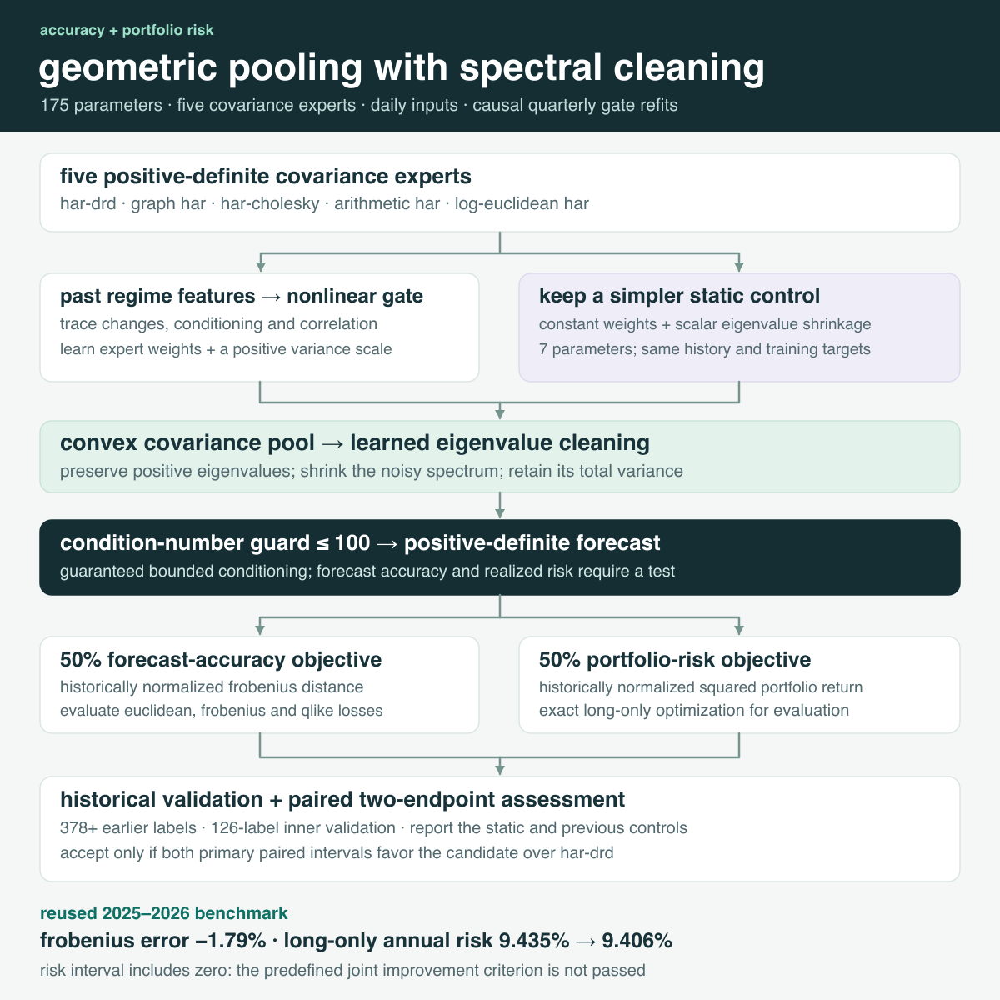

Beyond Replication
Two novel extensions that combine covariance experts adaptively — one through online learning on unit-trace shapes, the other through geometric pooling with spectral cleaning.
🔄 Adaptive Shape Mixture
Three experts (HAR-DRD, GHAR(GL,L), HAR-Cholesky) contribute unit-trace covariance shapes. Exponential weights update causally with delayed feedback. The common HAR-DRD trace provides total variance.

Primary result: Confirmation 95% CI includes zero. Learning the mixture weights does not establish a statistically significant shape-loss improvement.
🧠 Geometric Spectral Gate
Five SPD experts pooled with a 175-parameter regime gate + learned eigenvalue cleaner. Training optimizes equal-weight Frobenius distance and long-only portfolio return. Condition number capped at 100.

Primary result: Frobenius −1.79% vs HAR-DRD. Risk interval includes zero. The joint accuracy-and-risk criterion is not passed.